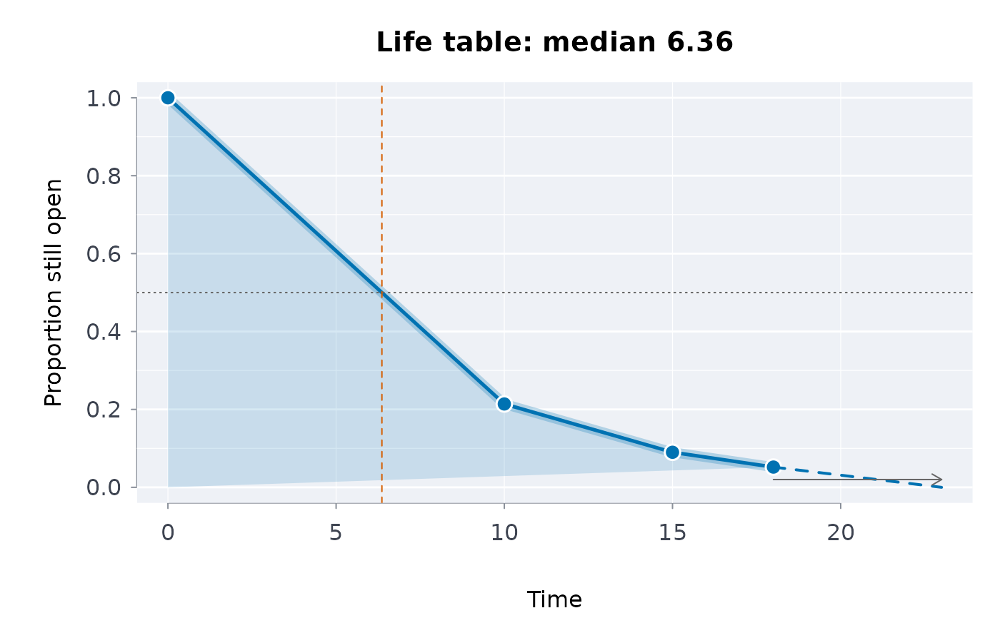

The actuarial (Cutler-Ederer) life table for times published only in bands – for example the share of court cases disposed within 10 months, between 10 and 15 months, and so on. It gives, at the end of each band, the proportion still open (the survival function) with a Greenwood confidence interval, the hazard within the band, and the median time.
Usage
lifetbl(
breaks,
events,
cens = 0,
conflvl = 0.95,
conftype = c("log-log", "log", "plain")
)Arguments
- breaks
Band edges, increasing, starting at the time origin:
c(0, 10, 15, 18, Inf)for the four bands above. The last edge may beInf(an open band). Or band labels such asc("Under 10", "10-15", "15-18", "Over 18"), read withprsbands.- events
Cases that ended in each band (counts, or expected counts such as a published share times the number of cases).
- cens
Cases withdrawn from observation in each band without the event (still open when the data were drawn); one value or one per band. Default 0.
- conflvl
Confidence level. Default 0.95.
- conftype
Scale of the interval:
"log-log"(the default, which keeps the limits inside 0 to 1),"log"or"plain".
Value
A data frame of class rmbl_life_table, one row per band:
lower, upper (the band edges), entering,
events, censored, atrisk (entering less half the
censored), q (conditional probability of the event in the
band), survival at the end of the band with se,
conflo and confup, hazard (events per
unit time within the band; NA for an open band), and the
attribute median.
Details
Within a band the censored cases are assumed to have been at risk for
half of it, so the number at risk is \(n'_j = n_j - c_j/2\); the
conditional probability of the event is \(q_j = d_j / n'_j\) and the
survival at the end of band \(j\) is \(\prod_{i \le j} (1 - q_i)\).
Greenwood's formula gives
\(\mathrm{Var}(\hat S_j) = \hat S_j^2 \sum_{i \le j} q_i / (n'_i (1 - q_i))\).
With no censoring the table equals the Kaplan-Meier estimate at the
band edges, and the Greenwood variance equals the one
survival::survfit() reports. The hazard in a closed band is
\(d_j / (w_j (n'_j - d_j / 2))\) for band width \(w_j\). The median
is interpolated linearly inside the band where survival crosses one
half, which assumes events are spread evenly across that band; when the
crossing falls in an open band, the median is reported as greater than
its lower edge.
Court statistics that count only disposed cases describe time to disposition among cases that were disposed, with no censoring; cases still pending are not in them, so the survival function describes the disposed cohort, not every case received.
The median is attribute "median" (Inf, with a note,
when survival never falls to one half or crosses it in the open band), and
attribute "lifetbl" records conflvl and
conftype. Errors: band labels that cannot be read, or that are
not contiguous, or with an open band other than the last; fewer than two
increasing edges, or an infinite edge other than the last; events
or cens that are not non-negative counts, one per band; no
cases at all; conflvl outside (0, 1); an unknown
conftype.
References
Cutler, S. J. and Ederer, F. (1958). Maximum utilization of the life table method in analyzing survival. Journal of Chronic Diseases, 8(6), 699-712.
Greenwood, M. (1926). The Natural Duration of Cancer. Reports on Public Health and Medical Subjects 33. HMSO, London.
Lee, E. T. and Wang, J. W. (2003). Statistical Methods for Survival Data Analysis, 3rd ed. Wiley, Hoboken, NJ. Chapter 4.
Examples
d <- read.csv(system.file("extdata", "ocj_time_to_disposition.csv",
package = "rmoriebricklayer"))
f <- read.csv(system.file("extdata", "ocj_flow_ontario.csv",
package = "rmoriebricklayer"))
last <- nrow(d)
shares <- unlist(d[last, c("under_10", "m10_15", "m15_18", "over_18")])
lt <- lifetbl(c(0, 10, 15, 18, Inf), events = shares * f$disposed[last])
lt
#> ── Life table (actuarial), 95% log-log Greenwood interval ────────
#> Median time: 6.36 (linear within its band)
#>
#> lower upper entering events censored atrisk q survival se
#> 0 10 23136.000 18184.896 0 23136.000 0.7860 0.214 0.0027
#> 10 15 4951.104 2868.864 0 4951.104 0.5794 0.090 0.0019
#> 15 18 2082.240 879.168 0 2082.240 0.4222 0.052 0.0015
#> 18 Inf 1203.072 1203.072 0 1203.072 1.0000 0.000 NA
#> conflo confup hazard
#> 0.2087 0.2193 0.1295
#> 0.0864 0.0937 0.1632
#> 0.0492 0.0549 0.1784
#> NA NA NA
#> ──────────────────────────────────────────────────────────────────
plot(lt)

# bands given by their labels, with some cases still open, on the log scale
lt2 <- lifetbl(c("Under 10", "10-15", "15-18", "Over 18"),
events = c(600, 150, 60, 90), cens = c(40, 20, 10, 0),
conftype = "log")
as.data.frame(lt2)[, c("lower", "upper", "atrisk", "survival",
"conflo", "confup")]
#> lower upper atrisk survival conflo confup
#> 1 0 10 950 0.3684211 0.33898914 0.4004083
#> 2 10 15 320 0.1957237 0.17145569 0.2234266
#> 3 15 18 155 0.1199597 0.09998399 0.1439263
#> 4 18 Inf 90 0.0000000 NA NA
attr(lt2, "median")
#> [1] 7.916667
# an open band can only come last
try(lifetbl(c(0, Inf, 20), events = c(5, 5)))
#> Error : `breaks` must be at least two increasing band edges